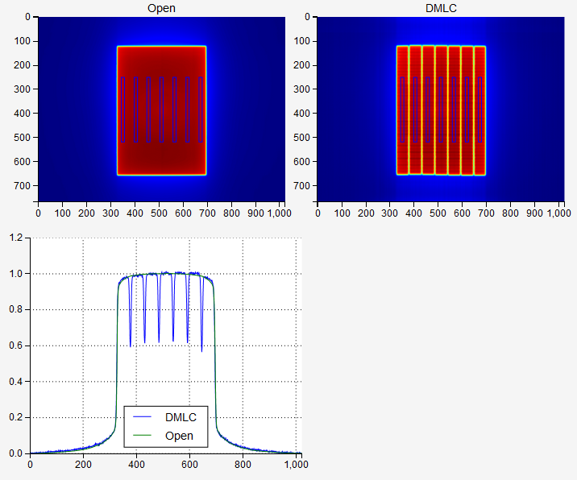

VMAT module¶
With this module you can analyze DRGS and DRMLC images according to Varian RapidArc QA. See Pylinac for full explanation.
Using the module is simple: chose image 1 and 2, one being DRMLC or DRGS, and the other an open field image. Click Analyze.
For each ROI, Rcorr and diff are calculated. If diff is within the tolerance, as defined in the configuration file, the ROI will pass the test. If all ROIs have passed, the test will have a passing status.
